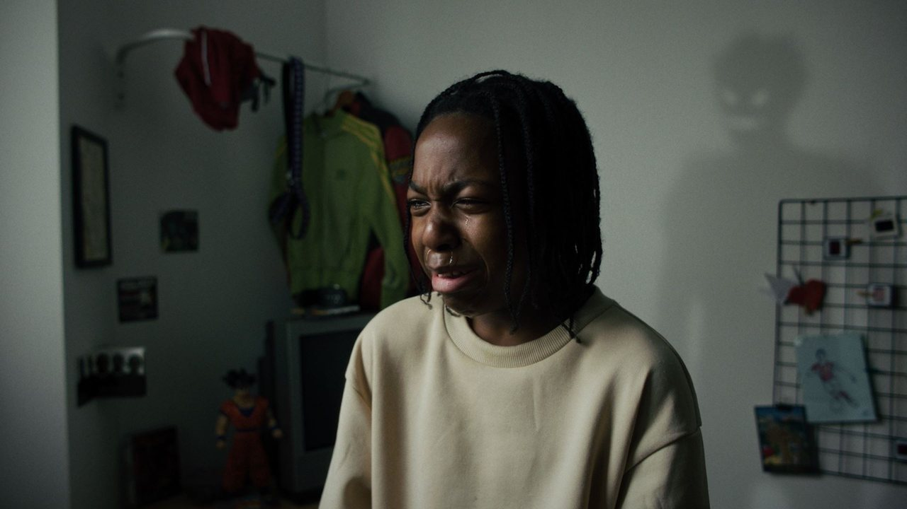
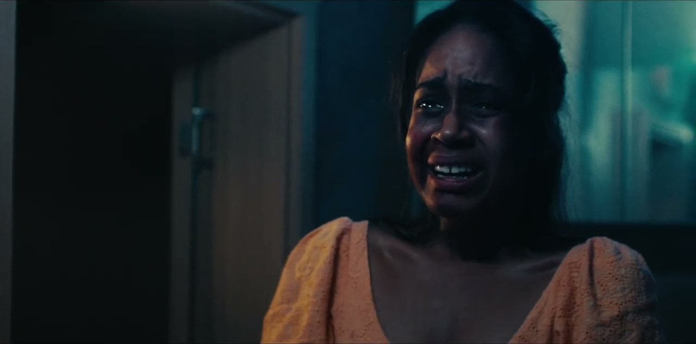

00:00:00:00Kids See Ghosts
- Réalisateur
- Daniel Thalmas
- Genre
- Fiction
- Durée
- 12 minutes
Un film sur la perception, les traumatismes d’enfance et la frontière entre le monde réel et le monde intérieur.
Des courts métrages portés par 12 musiciens en live : une autre façon de vivre une œuvre, entre émotion, écoute et création.
Deux œuvres de la jeune création ivoirienne reçoivent une partition originale, composée et arrangée par Illman Touré, puis jouée en direct par douze musiciens.

00:00:00:00Un film sur la perception, les traumatismes d’enfance et la frontière entre le monde réel et le monde intérieur.

00:00:00:00Un drame sur les choix, la responsabilité et leurs conséquences.
Chaque note est jouée en salle, en même temps que l’image. La projection est suivie d’une présentation de l’orchestre.
Touchez un pupitre · activez le son pour entendre l’orchestre Réserver ma placeUne résidence pour travailler la musique à l’image auprès d’un compositeur en activité : regarder, écrire, essayer, corriger.
Cinq jours, une partition.
Le vendredi 13 novembre 2026 à YELAM’S, Treichville.